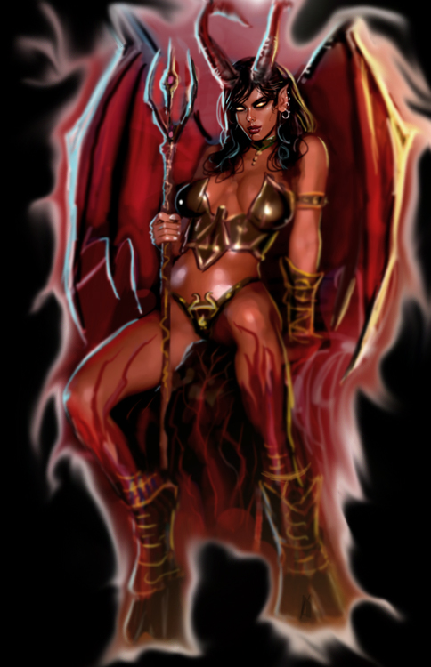

 Succubus Dungeon - Where pain meets pleasure - Seductive Succubi that charm the enemy. Convert caged prisoners to your side. Summoning rites for more allies. Stygian bronze for fancy armor corsages. Flesh-merging workshops. Your pets include Nightmars, Basilisks, Sothoth Spawns and Hellhounds. Dark rituals at the Abyssal temple, the temple of sin or the soul wells allow to further boost your dungeon.
|